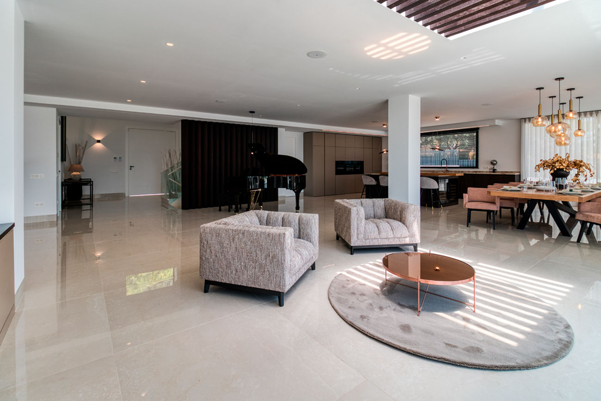
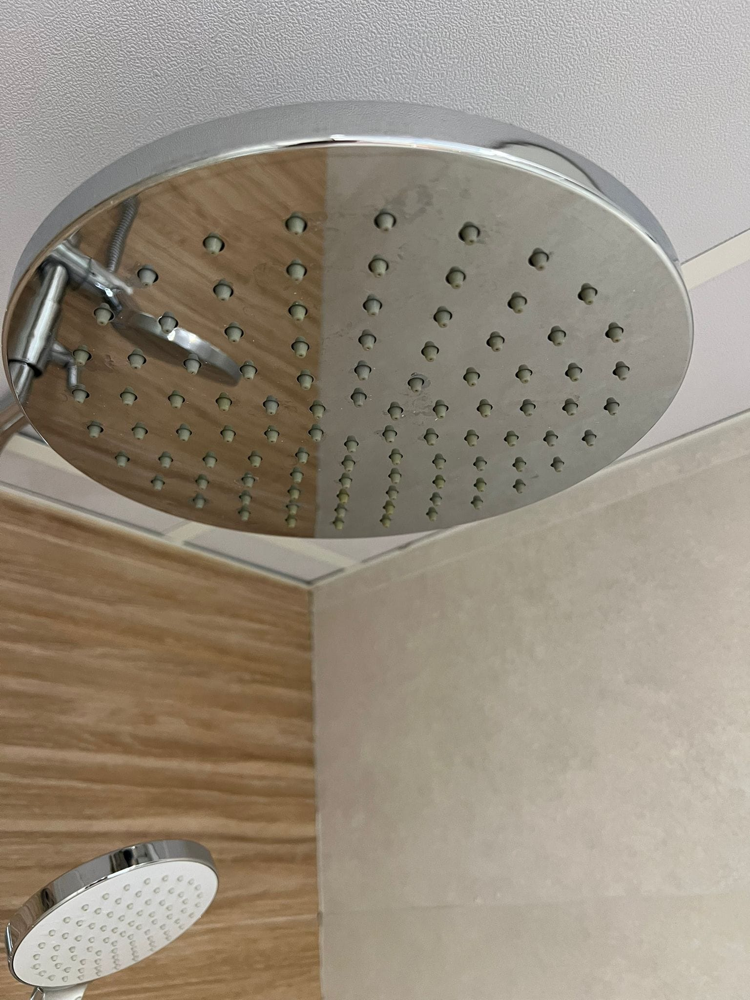
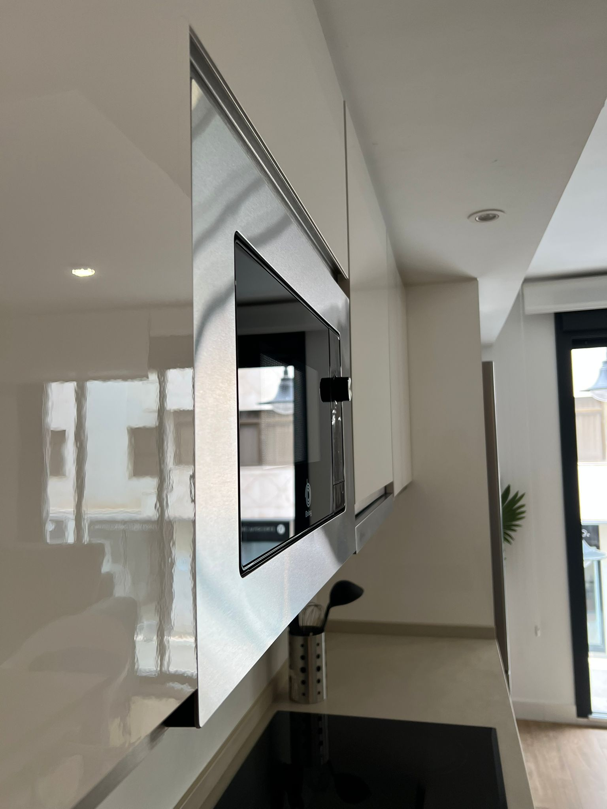
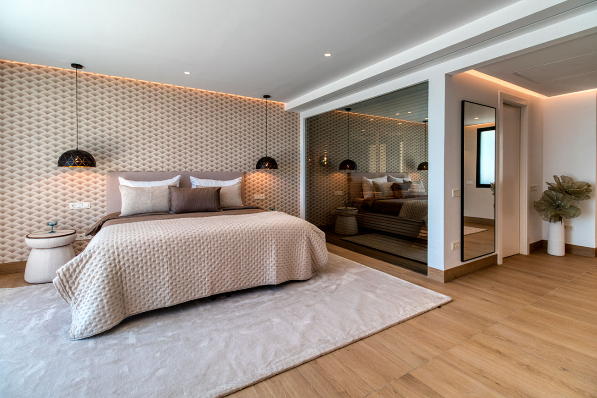
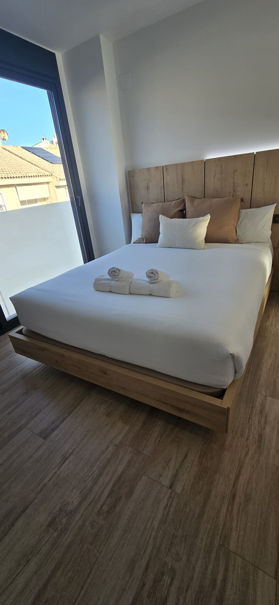

Define la experiencia, la presentación y el estándar que debe transmitir cada propiedad.
Volver al inicio
Metodología propia de Radiant Clean
La calidad no depende de una persona. Depende de un sistema.
El Sistema Radiant organiza la limpieza, el control operativo y la gestión de calidad para conseguir resultados consistentes, medibles y replicables en cada propiedad.
Procesos definidos
Control verificable
Equipos alineados
Mejora continua
El sistema de un vistazo
Nada se deja a la intuición. Cada área se revisa siguiendo un estándar definido.
Cómo se implanta
Seis fases. Un recorrido claro de principio a fin.
El Sistema Radiant convierte la experiencia en una secuencia que el equipo puede comprender, aplicar y verificar. Cada fase deja un resultado concreto antes de avanzar a la siguiente.

- Fase 1 Análisis de la propiedad Evaluamos la vivienda, sus necesidades, inventario y puntos críticos. ResultadoDiagnóstico y mapa de puntos críticos.
- Fase 2 Organización operativa Definimos procedimientos, materiales, tiempos y estándares. ResultadoProtocolo operativo claro y compartido.
- Fase 3 Formación práctica Mostramos exactamente cómo debe realizarse cada tarea. ResultadoEquipo alineado en una vivienda real.
- Fase 4 Checklist especializada Cada estancia tiene controles específicos y verificables. ResultadoControl verificable estancia por estancia.
- Fase 5 Supervisión y auditoría Revisamos resultados y detectamos incidencias antes de la llegada del huésped. ResultadoIncidencias detectadas antes de la entrada.
- Fase 6 Mejora continua Analizamos errores repetitivos y optimizamos constantemente el proceso. ResultadoUn sistema más sólido con cada servicio.
La excelencia deja de depender de quién realiza el trabajo y pasa a depender del sistema que lo respalda.
Radiant Control · Calidad verificable
Lo que revisamos antes de decir “está preparada”.
Una vivienda puede parecer limpia y seguir escondiendo fallos que afectan al huésped, a la reputación de la propiedad y a la operativa diaria. El control convierte esos detalles en puntos concretos y verificables.


- 01Estado general de la viviendaHigiene, orden y presentación en todas las estancias.
- 02Presentación de camasTextiles, simetría y sensación visual de descanso.
- 03Brillo de griferíasMarcas, cal y acabados que revelan el nivel real.
- 04Olor y sensación de frescuraHumedad, olores persistentes y espacios cerrados.
- 05Reposición de amenitiesBásicos completos y colocados antes de la llegada.
- 06Inventario básicoLo necesario está disponible y en condiciones de uso.
- 07Elementos dañados o faltantesIncidencias registradas y comunicadas a tiempo.
- 08Detalles que afectan al huéspedTodo aquello que puede romper la primera impresión.
El factor invisible
La calidad no solo se ve. También se percibe.
La primera impresión comienza en los primeros segundos. Por eso el control incluye presentación, orden y olor: la vivienda debe transmitir frescura real al entrar, sin perfumes que oculten humedad o una incidencia.
- VerAcabados, orden y presentación.
- PercibirArmonía y sensación de bienvenida.
- OlerAusencia de olores persistentes o humedad.

La diferencia entre una vivienda limpia y una vivienda preparada está en los detalles.
Radiant Stock · Control operativo
Todo lo necesario, antes de cada entrada.
El stock no es una tarea secundaria. Es la garantía de que la operación puede cerrarse sin compras urgentes, faltantes ni sorpresas para el huésped.

Antes de abrir la puerta
Todo revisado. Todo disponible.
Gestionamos textiles, amenities, consumibles y material operativo para garantizar que cada vivienda disponga de todo lo necesario antes de recibir al huésped.
Controlamos incidencias, necesidades de reposición y seguimiento de inventario para evitar imprevistos y mejorar la organización.
Ficha operativaControl previo a la llegada
TextilesDisponibilidad · rotación · estadoVerificar
AmenitiesUnidades · presentación · reposiciónReponer
ConsumiblesMínimos · uso · previsiónControlar
Material operativoFaltantes · daños · incidenciasRegistrar
- 01Inventariar
Definir qué necesita cada propiedad y en qué cantidad.
- 02Registrar
Anotar consumos, faltantes, daños y necesidades reales.
- 03Reponer
Anticipar compras y reposiciones antes de que falte algo.
- 04Verificar
Confirmar que todo está disponible antes de cada entrada.
Resultado operativoMenos urgencias. Más orden. Una llegada sin imprevistos.
El ecosistema Radiant
Ocho áreas conectadas para que la calidad pueda crecer.
Las seis fases ordenan la implantación. Estas ocho áreas sostienen la operación, forman al equipo, controlan el resultado y protegen cada propiedad a largo plazo.
Convierte las prioridades de cada inmueble en procedimientos operativos claros.
Forma profesionales y equipos para trabajar bajo un mismo criterio de calidad.
Incorpora verificaciones, seguimiento y trazabilidad para supervisar cada servicio.
Integra prevención y conservación para reducir deterioros y costes futuros.
Organiza inventario, reposiciones y consumibles antes de cada llegada.
Evalúa resultados y detecta oportunidades de mejora de forma periódica.
Desarrolla herramientas para conectar equipos, incidencias y documentación operativa.
Un sistema diseñado para crecer
Más propiedades y más equipo, sin perder el estándar.
Radiant Clean implanta una estructura operativa que permite supervisar el servicio sin estar presente en cada intervención. La información, los criterios y las responsabilidades quedan ordenados para que la calidad pueda mantenerse cuando la operación crece.
- Protocolos y responsabilidades definidos.
- Seguimiento de resultados e incidencias.
- Formación y optimización continuas.